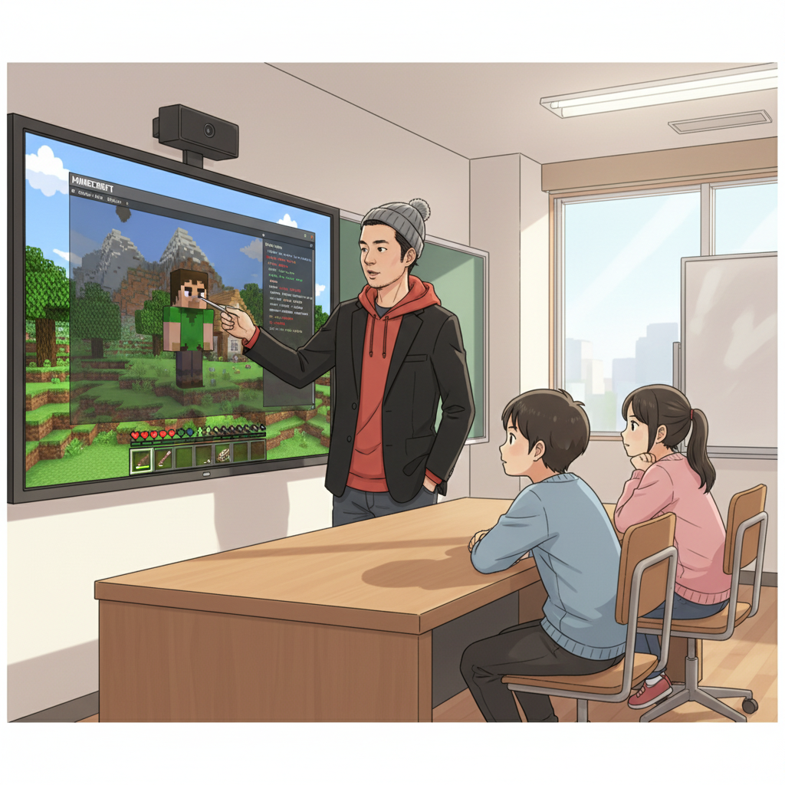
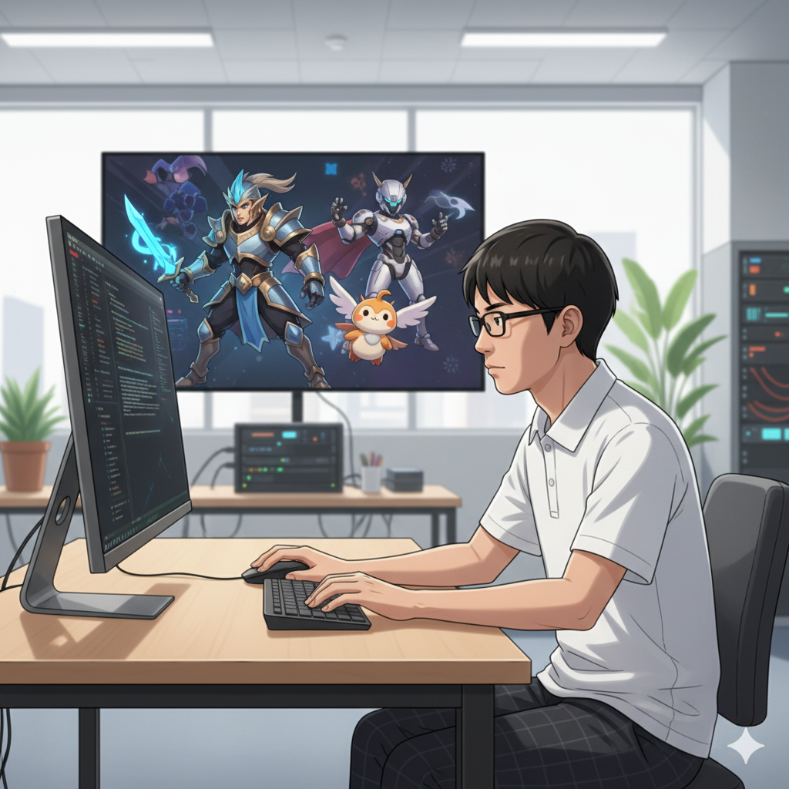
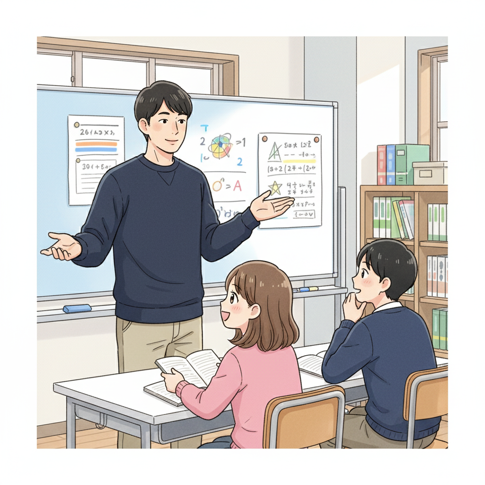

Minecraftコマンドが未来を拓く！？ ASDの集中力を活かすICT教育 (塾頭)

「集中しすぎ！」小さい頃、私はよくそう言われていました。興味のあることにはとことん没頭する。それはASD（自閉スペクトラム症）の特性の一つかもしれません。if塾では、その集中力を最大限に活かせるICT教育に力を入れています。特に人気なのがMinecraft。単なるゲームと思われがちですが、Minecraftのコマンドを使いこなすことは、プログラミングの基礎を学ぶ上で非常に有効なんです。
例えば、複雑な建築物を自動生成するコマンドを組むには、論理的な思考力や問題解決能力が求められます。最初は難しいと感じるかもしれませんが、一つずつクリアしていくうちに、プログラミングの楽しさに目覚める子どもたちがたくさんいます。if塾では、Minecraftを入り口に、それぞれの興味や才能に合わせたICTスキルを伸ばすサポートをしています。
実際に、if塾に通うA君は、Minecraftのコマンドを通してプログラミングに興味を持ち、今ではPythonでAIの開発に挑戦しています。彼の才能が開花する瞬間を目の当たりにし、私は確信しました。発達特性は、決して『障害』ではなく、『才能』になりうるのだと。
ADHDの僕がプログラミングに没頭できた理由（CTO）

僕、CTOの井上陽斗は、高校生の時に塾頭と出会いました。小さい頃からゲームが好きで、特にシューティングゲームには目がありませんでした。でも、ADHDの特性のせいか、集中力が続かず、飽きっぽい性格だと思っていました。そんな僕が、なぜプログラミングに没頭できたのか？
きっかけは、塾頭に勧められたプログラミング言語『Unity』でした。Unityはゲーム開発に特化した言語で、自分のアイデアをすぐに形にできるのが魅力でした。最初は簡単なゲームの改造から始め、徐々にオリジナルのゲームを作るようになりました。すると、不思議なことに、ADHDの特性がプラスに働き始めたんです。
一つのことに集中し始めると、周りの音が聞こえなくなるくらい没頭してしまう。その集中力を活かして、難しいバグ（プログラムの誤り）も根気強く修正できるようになりました。if塾では、僕のような発達特性を持つ子どもたちが、自分の特性を活かして成長できる環境を提供しています。
今では、AI技術を応用したゲームの開発にも挑戦しています。あの頃の僕には想像もできなかった未来が、今、目の前に広がっています。
不登校から国立大学へ！ 僕を変えたif塾との出会い (塾長)

塾長の山﨑琢己です。中学時代は、ADHDとASDの診断を受け、特別支援学級に通っていました。学校生活になじめず、不登校になった時期もありました。そんな僕を変えたのが、高校で出会った塾頭でした。
塾頭は、僕の特性を『個性』として受け止め、プログラミングの才能を見出してくれました。最初は戸惑いましたが、塾頭の熱心な指導のおかげで、少しずつ自信を持てるようになりました。if塾では、それぞれのペースに合わせて、ICTスキルを習得できるカリキュラムが用意されています。小さな成功体験を積み重ねることで、自信を取り戻し、自分の可能性を信じられるようになりました。
僕自身、ChatGPTなどのAIツールを活用して、学習効率を上げる方法を研究しています。例えば、文章の要約や翻訳をAIに任せることで、より本質的な学習に集中できます。if塾では、AIツールを単なる便利な道具としてだけでなく、創造性を刺激するツールとして活用しています。
今では、国立大学に通いながら、if塾で後輩たちの支援をしています。僕の経験が、少しでも彼らの希望になれば嬉しいです。不登校だった僕でも、ここまで成長できたんだから、きっと君にもできる。
🎯 興味を持っていただいた方へ
if塾では、発達特性を持つ子どもたちの「好き」を「才能」に変える教育を行っています。現在の記事内容と実際の活動に大きなズレはありませんが、詳細については直接お問い合わせください。
📌 記事について
この記事は、塾頭による完全自動化への挑戦としてAIが自動生成しています。将来的には塾頭が執筆しているような記事になることを目指しており、現時点では事実と異なる内容が含まれる可能性があります。最新の正確な情報については、お問い合わせフォームよりご確認ください。
🤖 Generated with AI - if塾のブログ自動化プロジェクト